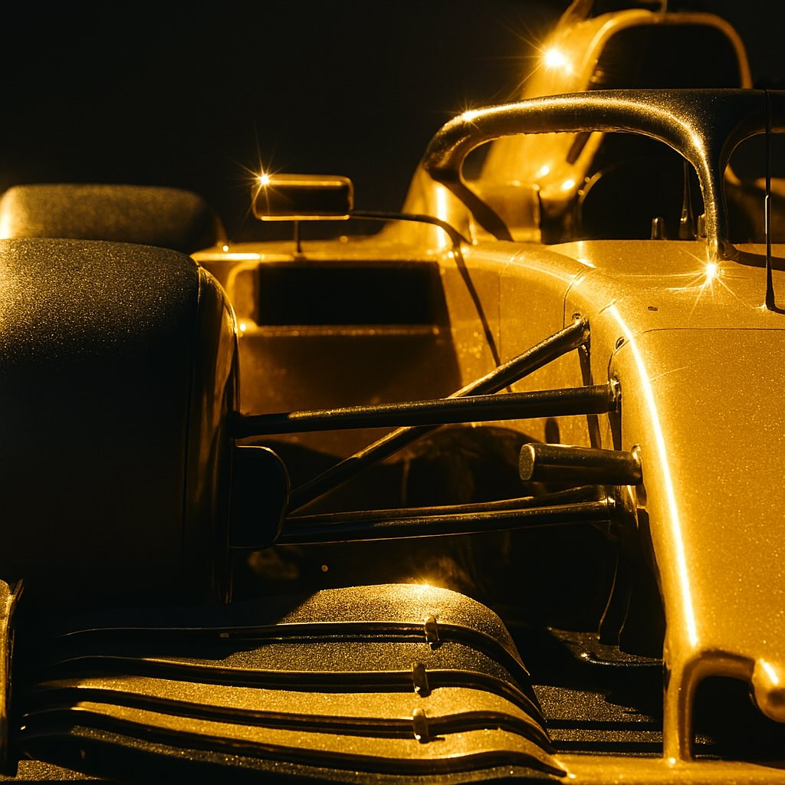

F1log オートパイロット - Japanese Edition of overseas Formula 1 news

20250329 配信
Your browser does not support the audio element.
1. 中国GP：マクラーレンの圧倒的ペースと順位予想⚡
ANALYSIS: How does race pace from the Chinese Grand Prix reveal current pecking order?
https://www.f1technical.net/news/26505
2. 角田裕毅、レッドブル昇格。ローソンは育成チームへ⚡
‘Sensational’ Tsunoda deserves Red Bull call-up - Mekies
https://racer.com/2025/03/27/sensational-tsunoda-deserves-red-bull-call-up-mekies/
3. 角田裕毅、レッドブル・レーシングに昇格⚡
Red Bull confirms Tsunoda promotion; Lawson returning to Racing Bulls
https://racer.com/2025/03/27/red-bull-confirms-tsunoda-promotion-lawson-returning-to-racing-bulls/
4. 2025年F1：ハースF1チームの劇的な躍進と課題
Ocon sees work to do at Haas despite pride in quick turnaround
https://racer.com/2025/03/28/ocon-sees-work-to-do-at-haas-despite-pride-in-quick-turnaround/
5. メルセデス、若手アントネッリを高く評価 F1での活躍に期待
Mercedes sees a lot more to come from ‘brilliant fit’ Antonelli
https://racer.com/2025/03/28/mercedes-sees-a-lot-more-to-come-from-brilliant-fit-antonelli/
6. F1：ローソン、レッドブルからアルファタウリへ異動
'We made mistake' on Lawson, says Red Bull chief
https://www.bbc.com/sport/formula1/articles/ckgzg0mjkero
7. レッドブル、ローソン昇格で苦戦、今後の開発に期待
Red Bull confirm Tsunoda to replace Lawson
https://www.bbc.com/sport/formula1/articles/cdxq14pp27yo
8. レッドブルのドライバー起用とチーム運営の問題点
Red Bull only has itself to blame for its driver mess
https://racer.com/2025/03/27/red-bull-only-has-itself-to-blame-for-its-driver-mess/
📄 エピソードテキストを見る